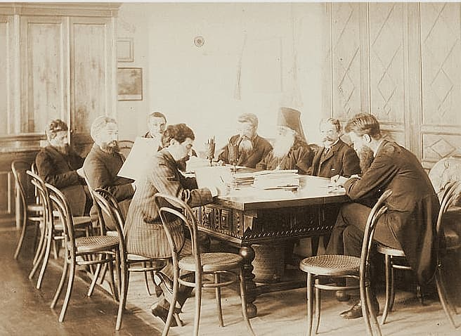
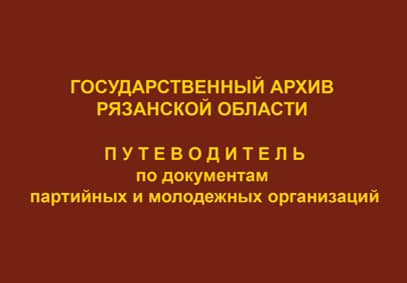

— новости —
12.07.2022О создании приемочной комиссии по госконтракту № 9 от 15 ноября 2016 г.
Архивы, традиционно замкнутые и закрытые для широкой публики, сегодня активно осваивают Интернет-пространство и, благодаря новым информационным возможностям, становятся понятнее, доступнее, ближе. Главная задача нашего сайта – максимально полно рассказать о документах архива и повседневной деятельности учреждения, а также, насколько позволят наши скромные возможности, создать условия для дистанционной работы с фондами. На сайте представлена полная контактная информация учреждения, режим и правила работы читального зала, информация об оказываемых услугах.
-
12.07.2022
Государственный архив Рязанской области: Путеводитель. Часть первая -
12.07.2022
Приказ о создании приемочной комиссии -

12.07.2022
Государственный архив Рязанской области: Путеводитель. Часть первая -
12.07.2022
Приказ о создании приемочной комиссии -
12.07.2022
Государственный архив Рязанской области: Путеводитель. Часть первая. Фонды дореволюционных учреждений и учреждений Временного правительства. Рязань, 2014